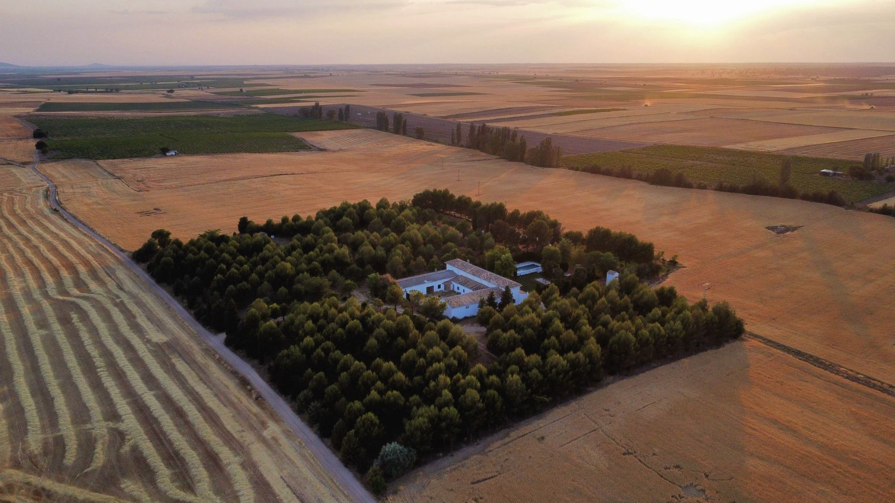
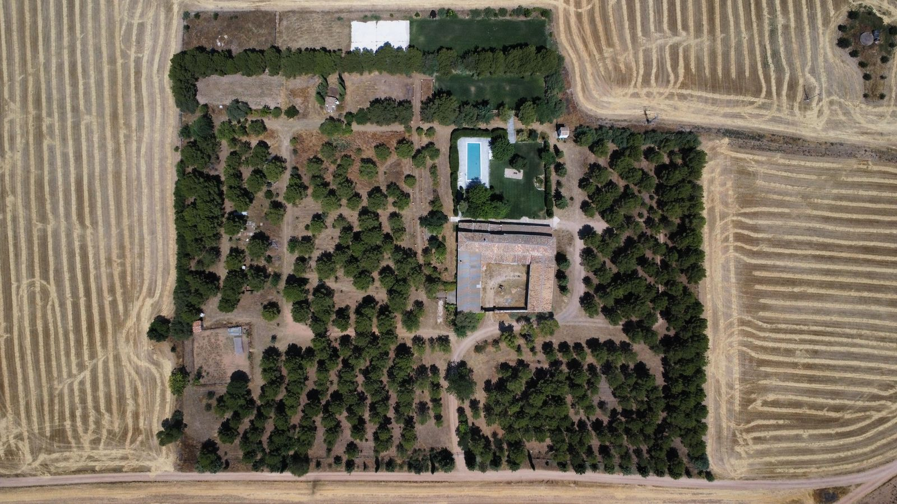

Dónde estamos
En La Casa del Marqués, en Horcajo de Santiago (Cuenca).

La finca vista desde el aire: un bosque de pinos en medio de los campos de cereal de La Mancha.

Vista desde arriba: la casa y la piscina en el centro, rodeadas de pinares.
Cómo llegar
Familia Hogar BetaniaLa Casa del Marqués s/n
16410 Horcajo de Santiago (Cuenca)
Estamos en el campo, a las afueras de Horcajo de Santiago, en la provincia de Cuenca, a poco más de una hora en coche de Madrid. La forma más fácil de llegar es abrir la ubicación en Google Maps y dejarse guiar hasta la puerta de la finca.
El lugar
Tres hectáreas de finca vallada en plena Mancha, con pinares para pasear y orar en silencio, zonas de césped, parque infantil y piscina. Lejos de la ciudad, el silencio y el cielo de noche invitan al encuentro con Dios.
Si venís en grupo y necesitáis indicaciones para un autobús o coordinar la llegada, escribidnos y os ayudamos.